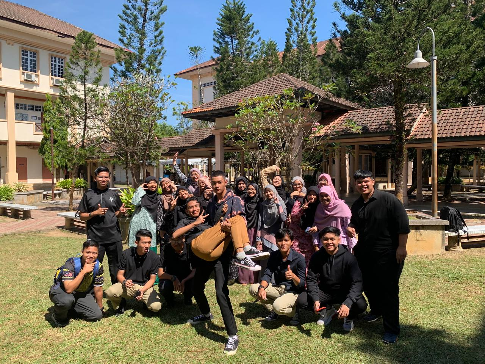

University
UNIVERSITY

This is my primary school, as this picture shows.
I'm now studying for a 2.5-year diploma in library informatics at the UiTM Kedah Branch. One of Universiti Teknologi MARA's branches, UiTM Kedah Branch, was founded in Kedah, Malaysia. It is in charge of the Sungai Petani UiTM campus in Kedah and is led by a rector.
On October 1, 1997, YB Tun Daim Zainuddin, the Minister of Finance, officially opened UiTM Kedah. In November 1997, it opened for business with 162 students and 25 administrative employees. The campus, which is situated about 14 kilometres from Sungai Petani in Mukim Bujang (between Semeling and Merbok), covers 350 acres. It was built with funds from the RM38.4 million approved 6th Malaysian Budget Plan.
Seven faculties of UiTM Kedah provide diploma and degree programmes:
- Faculty of Administrative Sciences and Policy Studies
- Faculty of Accounting
- Faculty of Art and Design
- Faculty of Computer Science and Mathematics
- Faculty of Business Management
- Faculty of Information Management
- Faculty of Law

On October 2, 2022, I entered UiTM Kedah for the first time. My programme is called "Diplomas in Library Informtics (CDIM144)" and my faculty is called "College of Computing, Informatics and Mathematics." This is a diploma classmate of mine; we have all been in the same classes since semester one and haven't switched till semester four. There are 23 people in my class this semester, which is called KCDIM1444B.
I truly enjoy this class a lot, and I get along well with my classmates. They are the most helpful and caring peers you could ever meet. Their efforts to assist me with my work from the first semester onward have been very remarkable.Since some of my students are constantly arguing about their selfishness, I'm incredibly grateful that I don't have any toxic classmates. I'm really happy that my classmates get along well and have always been considerate of one another. Since we became classmates, we have essentially experienced all emotions together—happy, sad, difficult, and easy.I shall always be grateful to them and think of them.
This represents my exam results from semester one to semester four.
CD-COLLEGE OF COMPUTING, INFORMATICS AND MATHEMATICS, DIPLOMA IN LIBRARY INFORMATICS (CDIM144)
| Part |
Semester Result |
Exam Month |
Exam Status |
CGPA |
GPA |
| 1 |
20224 |
FEBRUARY 2023 |
LU(PASS) |
3.33 |
3.33 |
| 2 |
20232 |
JULY 2023 |
LU(PASS) |
3.28 |
3.23 |
| 3 |
20234 |
JANUARY 2024 |
LU(PASS) |
3.22 |
3.09 |